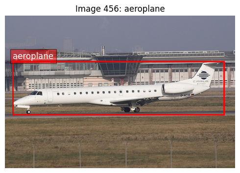
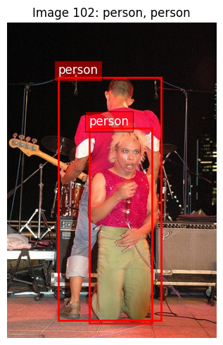
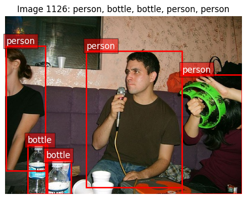
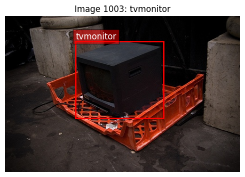
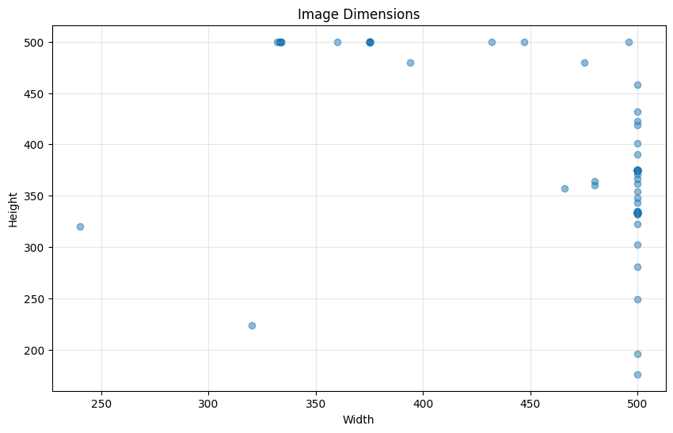
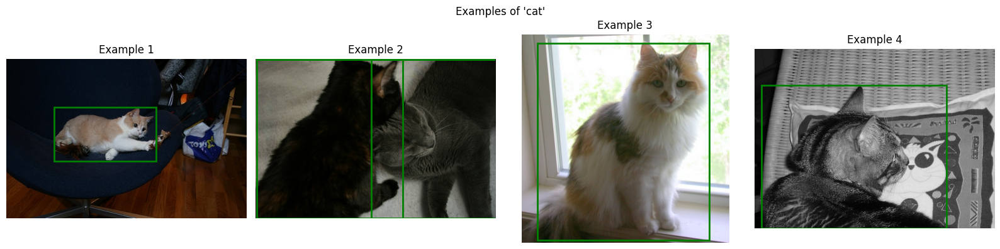
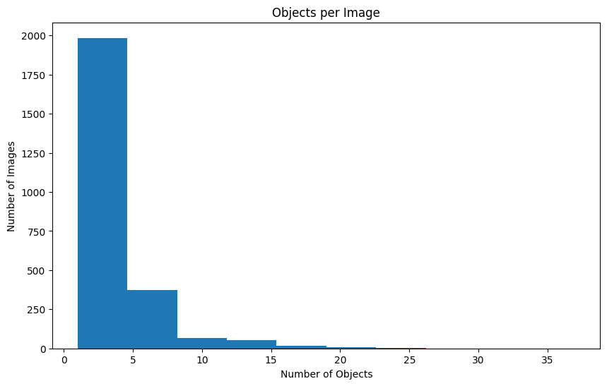
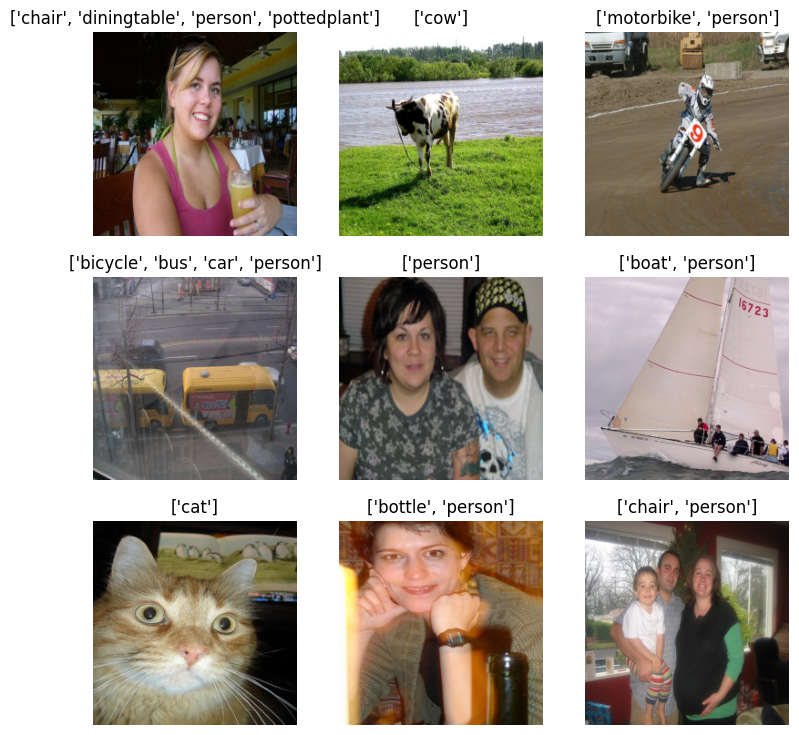
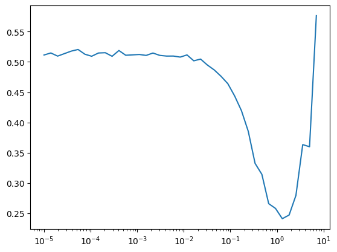

The autoreload extension is already loaded. To reload it, use:
%reload_ext autoreloadThe autoreload extension is already loaded. To reload it, use:
%reload_ext autoreloadset_seed(42)Let’s take a look at VOC2007.
data_path = fc.Path.home()/'data/'
data_path.ls()(#3) [Path('/home/kappa/data/VOCtrainval_06-Nov-2007.tar'),Path('/home/kappa/data/VOCdevkit'),Path('/home/kappa/data/pili')]ds = datasets.VOCDetection(root=data_path, year='2007', image_set='train', download=False)
dsDataset VOCDetection
Number of datapoints: 2501
Root location: /home/kappa/dataWhat’s in the data?
ds[0](<PIL.Image.Image image mode=RGB size=500x333>,
{'annotation': {'folder': 'VOC2007',
'filename': '000012.jpg',
'source': {'database': 'The VOC2007 Database',
'annotation': 'PASCAL VOC2007',
'image': 'flickr',
'flickrid': '207539885'},
'owner': {'flickrid': 'KevBow', 'name': '?'},
'size': {'width': '500', 'height': '333', 'depth': '3'},
'segmented': '0',
'object': [{'name': 'car',
'pose': 'Rear',
'truncated': '0',
'difficult': '0',
'bndbox': {'xmin': '156', 'ymin': '97', 'xmax': '351', 'ymax': '270'}}]}})show_voc_sample (ds, idx, figsize=(12, 10))
# set_seed(42)
# import random
# random_indices = random.sample(range(len(ds)), 5)
# for idx in random_indices:
# show_voc_sample(ds, idx, figsize=(5,5))
Image size: 500x333
Number of objects: 1
Object 1: aeroplane, Difficult: 0, Truncated: 0
Image size: 332x500
Number of objects: 2
Object 1: person, Difficult: 0, Truncated: 0
Object 2: person, Difficult: 0, Truncated: 0
Image size: 500x375
Number of objects: 5
Object 1: person, Difficult: 0, Truncated: 1
Object 2: bottle, Difficult: 0, Truncated: 1
Object 3: bottle, Difficult: 0, Truncated: 1
Object 4: person, Difficult: 0, Truncated: 1
Object 5: person, Difficult: 0, Truncated: 1
Image size: 500x333
Number of objects: 1
Object 1: tvmonitor, Difficult: 0, Truncated: 0
Image size: 500x281
Number of objects: 2
Object 1: car, Difficult: 0, Truncated: 0
Object 2: car, Difficult: 0, Truncated: 0get_class_distribution (ds)
Get distribution of classes in the dataset
class_dist = get_class_distribution(ds)
plt.figure(figsize=(12, 6))
class_dist.plot(kind='bar')
plt.title('Class Distribution in VOC2007')
plt.ylabel('Count')
plt.xticks(rotation=45)
plt.tight_layout()
get_image_sizes (ds, n=100)
Get distribution of image sizes in the dataset
sizes = get_image_sizes(ds)
plt.figure(figsize=(10, 6))
plt.scatter(sizes['width'], sizes['height'], alpha=0.5)
plt.title('Image Dimensions')
plt.xlabel('Width')
plt.ylabel('Height')
plt.grid(True, alpha=0.3)
show_class_examples (ds, class_name, n=4)
Show examples of a specific class
show_class_examples(ds, 'cat');
objects_per_image = [len(ds[i][1]['annotation']['object']) for i in range(len(ds))]
plt.figure(figsize=(10, 6))
plt.hist(objects_per_image, bins=10)
plt.title('Objects per Image')
plt.xlabel('Number of Objects')
plt.ylabel('Number of Images')Text(0, 0.5, 'Number of Images')
calculate_dataset_stats (dataloader, max_images=None)
*Calculate mean and std of a dataset using a dataloader.
Args: dataloader: DataLoader instance max_images: Maximum number of images to use (None = use all)
Returns: mean and std per channel*
get_stats_dataloader (data_path, bs=32, year='2007')
Create a dataloader for calculating dataset statistics
stats_dl = get_stats_dataloader(data_path, bs=32)
mean, std = calculate_dataset_stats(stats_dl, max_images=2500)
print(f"Dataset mean: {mean.tolist()}")
print(f"Dataset std: {std.tolist()}")Dataset mean: [0.45178133249282837, 0.4230543076992035, 0.39004892110824585]
Dataset std: [0.26676368713378906, 0.261764258146286, 0.2731017470359802]We create pytorch dataset.
Pytorch has options to add transforms to its dataset, so this is like minai’s TfmDataset.
create_voc_datasets (data_path, train_tfms=None, valid_tfms=None, year='2007')
Create training and validation datasets for VOC
trn_ds, val_ds = create_voc_datasets(data_path)
trn_dsDataset VOCDetection
Number of datapoints: 2501
Root location: /home/kappa/data
StandardTransform
Transform: Compose(
RandomResizedCrop(size=(224, 224), scale=(0.08, 1.0), ratio=(0.75, 1.3333333333333333), interpolation=InterpolationMode.BILINEAR, antialias=True)
RandomHorizontalFlip(p=0.5)
ToImage()
ToDtype(scale=True)
Normalize(mean=[0.485, 0.456, 0.406], std=[0.229, 0.224, 0.225], inplace=False)
)The target has many more information than we need. We only need annotation.object’s names for classification purposes.
trn_ds[0](Image([[[-0.8678, -0.9020, -0.8678, ..., -1.0390, -1.0733, -1.1418],
[-0.9020, -0.8849, -0.8849, ..., -1.1247, -1.1418, -1.1589],
[-0.8849, -0.9192, -0.9020, ..., -1.2103, -1.2103, -1.1418],
...,
[-0.4739, -0.4911, -0.5253, ..., -0.7650, -0.7308, -0.7479],
[-0.5938, -0.5253, -0.5767, ..., -0.7650, -0.7137, -0.7479],
[-0.6452, -0.5938, -0.5596, ..., -0.7993, -0.7822, -0.7822]],
[[-0.7577, -0.7927, -0.7577, ..., -0.9328, -0.9678, -1.0378],
[-0.7927, -0.7752, -0.7752, ..., -1.0203, -1.0378, -1.0553],
[-0.7752, -0.8102, -0.7927, ..., -1.1078, -1.1078, -1.0378],
...,
[-0.3725, -0.3901, -0.4251, ..., -0.6352, -0.6001, -0.6176],
[-0.4951, -0.4251, -0.4776, ..., -0.6352, -0.5826, -0.6176],
[-0.5476, -0.4951, -0.4601, ..., -0.6702, -0.6527, -0.6527]],
[[-0.5321, -0.5670, -0.5321, ..., -0.7413, -0.7761, -0.8458],
[-0.5670, -0.5495, -0.5495, ..., -0.8284, -0.8458, -0.8633],
[-0.5495, -0.5844, -0.5670, ..., -0.9156, -0.9156, -0.8458],
...,
[-0.1835, -0.2010, -0.2358, ..., -0.3753, -0.3404, -0.3578],
[-0.3055, -0.2358, -0.2881, ..., -0.3753, -0.3230, -0.3578],
[-0.3578, -0.3055, -0.2707, ..., -0.4101, -0.3927, -0.3927]]], ),
{'annotation': {'folder': 'VOC2007',
'filename': '000012.jpg',
'source': {'database': 'The VOC2007 Database',
'annotation': 'PASCAL VOC2007',
'image': 'flickr',
'flickrid': '207539885'},
'owner': {'flickrid': 'KevBow', 'name': '?'},
'size': {'width': '500', 'height': '333', 'depth': '3'},
'segmented': '0',
'object': [{'name': 'car',
'pose': 'Rear',
'truncated': '0',
'difficult': '0',
'bndbox': {'xmin': '156', 'ymin': '97', 'xmax': '351', 'ymax': '270'}}]}})With voc_extract, we can get any field we want from the target.
voc_extract (field='name')
Create a function that extracts a specific field from VOC annotations
Object name:
ds = datasets.VOCDetection(
root=data_path, year="2007", image_set='train', download=False,
target_transform=voc_extract())
ds[0](<PIL.Image.Image image mode=RGB size=500x333>, (#1) ['car'])Bound box:
ds = datasets.VOCDetection(
root=data_path, year="2007", image_set='train', download=False,
target_transform=voc_extract(field='bndbox'))
ds[0](<PIL.Image.Image image mode=RGB size=500x333>,
(#1) [{'xmin': '156', 'ymin': '97', 'xmax': '351', 'ymax': '270'}])For training, we actually need one-hot encoded vector because the targets are multi-labels.
VOC_CLASSES(#20) ['aeroplane','bicycle','bird','boat','bottle','bus','car','cat','chair','cow','diningtable','dog','horse','motorbike','person','pottedplant','sheep','sofa','train','tvmonitor']names = ['car', 'dog']
names['car', 'dog']lbls = torch.zeros(len(VOC_CLASSES))
lblstensor([0., 0., 0., 0., 0., 0., 0., 0., 0., 0., 0., 0., 0., 0., 0., 0., 0., 0., 0., 0.])torch.scatter is a good way to do this:
onehot = lbls.scatter(0, torch.tensor([1,3,5]), 1)
onehottensor([0., 1., 0., 1., 0., 1., 0., 0., 0., 0., 0., 0., 0., 0., 0., 0., 0., 0.,
0., 0.])onehot_tfm (targ, clss=['aeroplane', 'bicycle', 'bird', 'boat', 'bottle', 'bus', 'car', 'cat', 'chair', 'cow', 'diningtable', 'dog', 'horse', 'motorbike', 'person', 'pottedplant', 'sheep', 'sofa', 'train', 'tvmonitor'])
ds = datasets.VOCDetection(
root=data_path, year="2007", image_set='train', download=False,
target_transform=onehot_tfm)
ds[0](<PIL.Image.Image image mode=RGB size=500x333>,
tensor([0., 0., 0., 0., 0., 0., 1., 0., 0., 0., 0., 0., 0., 0., 0., 0., 0., 0.,
0., 0.]))How about going back to label from one hot encoding? We use np.where. Why use numpy instead of pytorch? Because rvs_onehot_tfm is used for displaying images. We will never use this during training.
onehottensor([0., 1., 0., 1., 0., 1., 0., 0., 0., 0., 0., 0., 0., 0., 0., 0., 0., 0.,
0., 0.])np.where(onehot == 1)[0]array([1, 3, 5])VOC_CLASSES[np.where(onehot == 1)[0]](#3) ['bicycle','boat','bus']_rvs_onehot_tfm(onehot)(#3) ['bicycle','boat','bus']We got the dataset, so we are ready to create a dataloader. There are couple transformations we want to apply to images. We have images so far, but we need pytorch tensors with the same image sizes. We also normalize images using imagenet statistics.
to_tensor = v2.Compose([
v2.Resize((224, 224)),
v2.ToImage(),
v2.ToDtype(torch.float32, scale=True),
v2.Normalize(mean=[0.485, 0.456, 0.406], std=[0.229, 0.224, 0.225])
])trn_ds = datasets.VOCDetection(
root=data_path, year="2007", image_set='train', download=False,
transform=to_tensor, target_transform=onehot_tfm)
val_ds = datasets.VOCDetection(
root=data_path, year="2007", image_set='val', download=False,
transform=to_tensor, target_transform=onehot_tfm)bs = 64
multi_label_loss = nn.BCEWithLogitsLoss()
trn_dl, val_dl = get_dls(trn_ds, val_ds, bs=bs)xb,yb = next(iter(trn_dl))
xb.shape,yb[:10](torch.Size([64, 3, 224, 224]),
tensor([[0., 0., 0., 0., 0., 0., 0., 0., 0., 0., 0., 0., 0., 0., 1., 0., 1., 0.,
0., 0.],
[0., 0., 0., 0., 0., 0., 0., 0., 0., 0., 0., 0., 0., 1., 1., 0., 0., 0.,
0., 0.],
[0., 0., 0., 0., 0., 0., 0., 0., 0., 0., 0., 0., 1., 0., 1., 0., 0., 0.,
0., 0.],
[0., 0., 0., 0., 0., 0., 0., 0., 1., 0., 0., 0., 0., 0., 0., 0., 0., 0.,
0., 0.],
[0., 0., 0., 0., 0., 0., 0., 1., 0., 0., 0., 0., 0., 0., 0., 0., 0., 0.,
0., 0.],
[1., 0., 0., 0., 0., 0., 0., 0., 0., 0., 0., 0., 0., 0., 0., 0., 0., 0.,
0., 0.],
[0., 0., 0., 0., 0., 0., 1., 0., 0., 0., 0., 0., 0., 1., 1., 0., 0., 0.,
0., 0.],
[0., 1., 0., 0., 0., 0., 0., 0., 0., 0., 0., 0., 0., 0., 1., 0., 0., 0.,
0., 0.],
[0., 0., 0., 0., 0., 0., 0., 0., 0., 0., 0., 1., 0., 0., 1., 0., 0., 0.,
0., 0.],
[0., 0., 0., 0., 0., 0., 0., 0., 0., 0., 0., 0., 0., 0., 0., 0., 0., 0.,
0., 1.]]))Denormalize image before display.
denorm (x)
show_image(xb[0], tfm_x=denorm);get_classification_model (num_classes=20)
Create a multi-label classification model based on darknet19
model = get_classification_model()
dls = DataLoaders(trn_dl, val_dl)
learn = TrainLearner(model, dls, multi_label_loss, lr=1e-3,
cbs=[TrainCB(), DeviceCB(), ProgressCB(), MetricsCB()])
learn.summary()Tot params: 20359636; MFLOPS: 970.9| Module | Input | Output | Num params | MFLOPS |
|---|---|---|---|---|
| Sequential | (64, 3, 224, 224) | (64, 1024, 7, 7) | 19824576 | 970.4 |
| AdaptiveAvgPool2d | (64, 1024, 7, 7) | (64, 1024, 1, 1) | 0 | 0.0 |
| Flatten | (64, 1024, 1, 1) | (64, 1024) | 0 | 0.0 |
| Linear | (64, 1024) | (64, 512) | 524800 | 0.5 |
| ReLU | (64, 512) | (64, 512) | 0 | 0.0 |
| Dropout | (64, 512) | (64, 512) | 0 | 0.0 |
| Linear | (64, 512) | (64, 20) | 10260 | 0.0 |
We also have to reverse the transform for the targets. It is in onehot encoding, but we want class names.
ybtensor([[0., 0., 0., ..., 0., 0., 0.],
[0., 0., 0., ..., 0., 0., 0.],
[0., 0., 1., ..., 0., 0., 0.],
...,
[0., 0., 1., ..., 0., 0., 0.],
[0., 0., 0., ..., 1., 0., 0.],
[0., 0., 0., ..., 0., 0., 0.]])[', '.join(_rvs_onehot_tfm(y)) for y in np.array(yb)][:4]['person', 'chair, person', 'bird', 'dog, person, sofa']def rvs_onehot_tfm(yb): return [', '.join(_rvs_onehot_tfm(y)) for y in np.array(yb)]import sys, gc, traceback, math, typing, random, numpy as np
from itertools import zip_longestWe want to transform x and y.
learn.show_image_batch(tfm_x=denorm, tfm_y=_rvs_onehot_tfm)
learn.lr_find(gamma=1.4, max_mult=2)| loss | epoch | train | time |
|---|---|---|---|
| 0.455 | 0 | train | 00:13 |

model = get_classification_model()
learn = TrainLearner(model, dls, multi_label_loss, lr=1e-1,
cbs=[TrainCB(), DeviceCB(), ProgressCB(), MetricsCB()])learn.summary()Tot params: 20359636; MFLOPS: 970.9| Module | Input | Output | Num params | MFLOPS |
|---|---|---|---|---|
| Sequential | (64, 3, 224, 224) | (64, 1024, 7, 7) | 19824576 | 970.4 |
| AdaptiveAvgPool2d | (64, 1024, 7, 7) | (64, 1024, 1, 1) | 0 | 0.0 |
| Flatten | (64, 1024, 1, 1) | (64, 1024) | 0 | 0.0 |
| Linear | (64, 1024) | (64, 512) | 524800 | 0.5 |
| ReLU | (64, 512) | (64, 512) | 0 | 0.0 |
| Dropout | (64, 512) | (64, 512) | 0 | 0.0 |
| Linear | (64, 512) | (64, 20) | 10260 | 0.0 |
model = get_classification_model()
learn = TrainLearner(model, dls, multi_label_loss, lr=1e-1,
cbs=[DeviceCB(), ProgressCB(), MetricsCB()])
learn.fit(3)| loss | epoch | train | time |
|---|---|---|---|
| 0.371 | 0 | train | 00:13 |
| 0.261 | 0 | eval | 00:54 |
| 0.248 | 1 | train | 00:13 |
| 0.237 | 1 | eval | 00:11 |
| 0.241 | 2 | train | 00:13 |
| 0.237 | 2 | eval | 00:11 |
class TopKAccuracy(Callback):
def __init__(self, k_values=[1, 5], class_names=VOC_CLASSES):
"""
Implements Top-K accuracy for multi-label classification
Args:
k_values: List of k values to compute (e.g., [1, 5] for top-1 and top-5)
class_names: List of class names
"""
self.k_values = sorted(k_values)
self.max_k = max(k_values)
self.class_names = class_names
def before_fit(self, learn):
self.learn = learn
def before_epoch(self, learn):
# Initialize counters for each k
self.correct = {k: 0 for k in self.k_values}
self.total = 0
def after_batch(self, learn):
# Get predictions and targets
logits = to_cpu(learn.preds)
targets = to_cpu(learn.batch[1])
batch_size = targets.size(0)
# For each image in the batch
for i in range(batch_size):
# Get ground truth classes for this image
true_classes = torch.where(targets[i] == 1)[0]
if len(true_classes) == 0:
continue # Skip images with no labels
# Get top-k predicted classes
_, top_indices = torch.topk(logits[i], min(self.max_k, len(self.class_names)))
# Check if any true class is in top-k predictions
for k in self.k_values:
top_k_indices = top_indices[:k]
# For multi-label: if any true class is in top-k predictions, count as correct
if any(cls in top_k_indices for cls in true_classes):
self.correct[k] += 1
self.total += 1
def after_epoch(self, learn):
phase = 'train' if learn.training else 'valid'
for k in self.k_values:
accuracy = self.correct[k] / self.total if self.total > 0 else 0
print(f"{phase} top-{k} accuracy: {accuracy:.4f}")# Alternative implementation that considers a prediction correct only if
# all true classes are in the top-k predictions
class StrictTopKAccuracy(Callback):
def __init__(self, k_values=[1, 5], class_names=VOC_CLASSES):
self.k_values = sorted(k_values)
self.max_k = max(k_values)
self.class_names = class_names
def before_fit(self, learn):
self.learn = learn
def before_epoch(self, learn):
self.correct = {k: 0 for k in self.k_values}
self.total = 0
def after_batch(self, learn):
logits = to_cpu(learn.preds)
targets = to_cpu(learn.batch[1])
batch_size = targets.size(0)
for i in range(batch_size):
true_classes = torch.where(targets[i] == 1)[0]
if len(true_classes) == 0:
continue
_, top_indices = torch.topk(logits[i], min(self.max_k, len(self.class_names)))
for k in self.k_values:
if k < len(true_classes):
continue # Can't fit all true classes in top-k if k < number of true classes
top_k_indices = set(top_indices[:k].tolist())
true_classes_set = set(true_classes.tolist())
# Strict version: all true classes must be in top-k predictions
if true_classes_set.issubset(top_k_indices):
self.correct[k] += 1
self.total += 1
def after_epoch(self, learn):
phase = 'train' if learn.training else 'valid'
for k in self.k_values:
accuracy = self.correct[k] / self.total if self.total > 0 else 0
print(f"{phase} strict top-{k} accuracy: {accuracy:.4f}")model = get_classification_model()
learn = TrainLearner(model, dls, multi_label_loss, lr=1e-1,
cbs=[DeviceCB(), ProgressCB(), MetricsCB(top5=TopKMultilabelAccuracy(k=5)),
TopKAccuracy(k_values=[1, 5])])learn.fit(3)| top5 | loss | epoch | train | time |
|---|---|---|---|---|
| 0.000 | 0.374 | 0 | train | 00:13 |
| 0.000 | 0.265 | 0 | eval | 00:11 |
| 0.000 | 0.247 | 1 | train | 00:13 |
| 0.000 | 0.238 | 1 | eval | 00:11 |
| 0.000 | 0.240 | 2 | train | 00:13 |
train top-1 accuracy: 0.3631
train top-5 accuracy: 0.6234
valid top-1 accuracy: 0.4084
valid top-5 accuracy: 0.6657
train top-1 accuracy: 0.4266
train top-5 accuracy: 0.6745
valid top-1 accuracy: 0.4084
valid top-5 accuracy: 0.7032
train top-1 accuracy: 0.4314
train top-5 accuracy: 0.7245--------------------------------------------------------------------------- KeyboardInterrupt Traceback (most recent call last) Cell In[75], line 1 ----> 1 learn.fit(3) File ~/git/minai/minai/core.py:260, in Learner.fit(self, n_epochs, train, valid, cbs, lr) 258 if lr is None: lr = self.lr 259 if self.opt_func: self.opt = self.opt_func(self.model.parameters(), lr) --> 260 self._fit(train, valid) 261 finally: 262 for cb in cbs: self.cbs.remove(cb) File ~/git/minai/minai/core.py:194, in with_cbs.__call__.<locals>._f(o, *args, **kwargs) 192 try: 193 o.callback(f'before_{self.nm}') --> 194 f(o, *args, **kwargs) 195 o.callback(f'after_{self.nm}') 196 except globals()[f'Cancel{self.nm.title()}Exception']: pass File ~/git/minai/minai/core.py:250, in Learner._fit(self, train, valid) 248 if train: self.one_epoch(True) 249 if valid: --> 250 with torch.inference_mode(): self.one_epoch(False) File ~/git/minai/minai/core.py:241, in Learner.one_epoch(self, training) 239 self.model.train(training) 240 self.dl = self.train_dl if training else self.dls.valid --> 241 self._one_epoch() File ~/git/minai/minai/core.py:194, in with_cbs.__call__.<locals>._f(o, *args, **kwargs) 192 try: 193 o.callback(f'before_{self.nm}') --> 194 f(o, *args, **kwargs) 195 o.callback(f'after_{self.nm}') 196 except globals()[f'Cancel{self.nm.title()}Exception']: pass File ~/git/minai/minai/core.py:236, in Learner._one_epoch(self) 234 @with_cbs('epoch') 235 def _one_epoch(self): --> 236 for self.iter,self.batch in enumerate(self.dl): self._one_batch() File ~/miniforge3/lib/python3.10/site-packages/fastprogress/fastprogress.py:41, in ProgressBar.__iter__(self) 39 if self.total != 0: self.update(0) 40 try: ---> 41 for i,o in enumerate(self.gen): 42 if self.total and i >= self.total: break 43 yield o File ~/miniforge3/lib/python3.10/site-packages/torch/utils/data/dataloader.py:701, in _BaseDataLoaderIter.__next__(self) 698 if self._sampler_iter is None: 699 # TODO(https://github.com/pytorch/pytorch/issues/76750) 700 self._reset() # type: ignore[call-arg] --> 701 data = self._next_data() 702 self._num_yielded += 1 703 if ( 704 self._dataset_kind == _DatasetKind.Iterable 705 and self._IterableDataset_len_called is not None 706 and self._num_yielded > self._IterableDataset_len_called 707 ): File ~/miniforge3/lib/python3.10/site-packages/torch/utils/data/dataloader.py:757, in _SingleProcessDataLoaderIter._next_data(self) 755 def _next_data(self): 756 index = self._next_index() # may raise StopIteration --> 757 data = self._dataset_fetcher.fetch(index) # may raise StopIteration 758 if self._pin_memory: 759 data = _utils.pin_memory.pin_memory(data, self._pin_memory_device) File ~/miniforge3/lib/python3.10/site-packages/torch/utils/data/_utils/fetch.py:52, in _MapDatasetFetcher.fetch(self, possibly_batched_index) 50 data = self.dataset.__getitems__(possibly_batched_index) 51 else: ---> 52 data = [self.dataset[idx] for idx in possibly_batched_index] 53 else: 54 data = self.dataset[possibly_batched_index] File ~/miniforge3/lib/python3.10/site-packages/torch/utils/data/_utils/fetch.py:52, in <listcomp>(.0) 50 data = self.dataset.__getitems__(possibly_batched_index) 51 else: ---> 52 data = [self.dataset[idx] for idx in possibly_batched_index] 53 else: 54 data = self.dataset[possibly_batched_index] File ~/miniforge3/lib/python3.10/site-packages/torchvision/datasets/voc.py:201, in VOCDetection.__getitem__(self, index) 193 """ 194 Args: 195 index (int): Index (...) 198 tuple: (image, target) where target is a dictionary of the XML tree. 199 """ 200 img = Image.open(self.images[index]).convert("RGB") --> 201 target = self.parse_voc_xml(ET_parse(self.annotations[index]).getroot()) 203 if self.transforms is not None: 204 img, target = self.transforms(img, target) File ~/miniforge3/lib/python3.10/site-packages/defusedxml/common.py:100, in _generate_etree_functions.<locals>.parse(source, parser, forbid_dtd, forbid_entities, forbid_external) 93 if parser is None: 94 parser = DefusedXMLParser( 95 target=_TreeBuilder(), 96 forbid_dtd=forbid_dtd, 97 forbid_entities=forbid_entities, 98 forbid_external=forbid_external, 99 ) --> 100 return _parse(source, parser) File ~/miniforge3/lib/python3.10/xml/etree/ElementTree.py:1222, in parse(source, parser) 1213 """Parse XML document into element tree. 1214 1215 *source* is a filename or file object containing XML data, (...) 1219 1220 """ 1221 tree = ElementTree() -> 1222 tree.parse(source, parser) 1223 return tree File ~/miniforge3/lib/python3.10/xml/etree/ElementTree.py:586, in ElementTree.parse(self, source, parser) 584 if not data: 585 break --> 586 parser.feed(data) 587 self._root = parser.close() 588 return self._root File ~/miniforge3/lib/python3.10/xml/etree/ElementTree.py:1713, in XMLParser.feed(self, data) 1711 """Feed encoded data to parser.""" 1712 try: -> 1713 self.parser.Parse(data, False) 1714 except self._error as v: 1715 self._raiseerror(v) File /home/conda/feedstock_root/build_artifacts/python-split_1687559129017/work/Modules/pyexpat.c:416, in StartElement() File ~/miniforge3/lib/python3.10/xml/etree/ElementTree.py:1641, in XMLParser._start(self, tag, attr_list) 1638 def _end_ns(self, prefix): 1639 return self.target.end_ns(prefix or '') -> 1641 def _start(self, tag, attr_list): 1642 # Handler for expat's StartElementHandler. Since ordered_attributes 1643 # is set, the attributes are reported as a list of alternating 1644 # attribute name,value. 1645 fixname = self._fixname 1646 tag = fixname(tag) KeyboardInterrupt:
model = get_classification_model()
learn = TrainLearner(model, dls, multi_label_loss, lr=1e-1,
cbs=[DeviceCB(), ProgressCB(),
MetricsCB(mAP=MultilabelAUPRC(num_labels=20), hamming=MultilabelAccuracy(criteria='hamming'), overlap=MultilabelAccuracy(criteria='overlap'), contain=MultilabelAccuracy(criteria='contain'), belong=MultilabelAccuracy(criteria='belong'),top1=MultilabelAccuracy(criteria='exact_match'), top5=TopKMultilabelAccuracy(criteria='contain', k=5), ),
TopKAccuracy(k_values=[1, 5]),
StrictTopKAccuracy(k_values=[1, 5])])learn.fit(5)| mAP | hamming | overlap | contain | belong | top1 | top5 | loss | epoch | train | time |
|---|---|---|---|---|---|---|---|---|---|---|
| 0.085 | 0.920 | 0.002 | 0.001 | 0.998 | 0.001 | 0.299 | 0.374 | 0 | train | 03:34 |
| 0.103 | 0.922 | 0.000 | 0.000 | 1.000 | 0.000 | 0.362 | 0.263 | 0 | eval | 01:20 |
| 0.099 | 0.920 | 0.006 | 0.001 | 0.995 | 0.001 | 0.355 | 0.249 | 1 | train | 03:20 |
| 0.149 | 0.922 | 0.000 | 0.000 | 1.000 | 0.000 | 0.423 | 0.238 | 1 | eval | 01:14 |
train top-1 accuracy: 0.3894
train top-5 accuracy: 0.6301
train strict top-1 accuracy: 0.0768
train strict top-5 accuracy: 0.2991
valid top-1 accuracy: 0.4084
valid top-5 accuracy: 0.7040
valid strict top-1 accuracy: 0.0797
valid strict top-5 accuracy: 0.3622
train top-1 accuracy: 0.4278
train top-5 accuracy: 0.6853
train strict top-1 accuracy: 0.0832
train strict top-5 accuracy: 0.3555
valid top-1 accuracy: 0.4084
valid top-5 accuracy: 0.7104
valid strict top-1 accuracy: 0.0797
valid strict top-5 accuracy: 0.4231--------------------------------------------------------------------------- KeyboardInterrupt Traceback (most recent call last) Cell In[117], line 1 ----> 1 learn.fit(5) File ~/git/minai/minai/core.py:260, in Learner.fit(self, n_epochs, train, valid, cbs, lr) 258 if lr is None: lr = self.lr 259 if self.opt_func: self.opt = self.opt_func(self.model.parameters(), lr) --> 260 self._fit(train, valid) 261 finally: 262 for cb in cbs: self.cbs.remove(cb) File ~/git/minai/minai/core.py:194, in with_cbs.__call__.<locals>._f(o, *args, **kwargs) 192 try: 193 o.callback(f'before_{self.nm}') --> 194 f(o, *args, **kwargs) 195 o.callback(f'after_{self.nm}') 196 except globals()[f'Cancel{self.nm.title()}Exception']: pass File ~/git/minai/minai/core.py:248, in Learner._fit(self, train, valid) 246 if self.epoch_sz is not None: self.train_dl = CycleDL(self.train_dl, self.epoch_sz) 247 for self.epoch in self.epochs: --> 248 if train: self.one_epoch(True) 249 if valid: 250 with torch.inference_mode(): self.one_epoch(False) File ~/git/minai/minai/core.py:241, in Learner.one_epoch(self, training) 239 self.model.train(training) 240 self.dl = self.train_dl if training else self.dls.valid --> 241 self._one_epoch() File ~/git/minai/minai/core.py:194, in with_cbs.__call__.<locals>._f(o, *args, **kwargs) 192 try: 193 o.callback(f'before_{self.nm}') --> 194 f(o, *args, **kwargs) 195 o.callback(f'after_{self.nm}') 196 except globals()[f'Cancel{self.nm.title()}Exception']: pass File ~/git/minai/minai/core.py:236, in Learner._one_epoch(self) 234 @with_cbs('epoch') 235 def _one_epoch(self): --> 236 for self.iter,self.batch in enumerate(self.dl): self._one_batch() File ~/miniforge3/envs/torch_latest/lib/python3.11/site-packages/fastprogress/fastprogress.py:41, in ProgressBar.__iter__(self) 39 if self.total != 0: self.update(0) 40 try: ---> 41 for i,o in enumerate(self.gen): 42 if self.total and i >= self.total: break 43 yield o File ~/miniforge3/envs/torch_latest/lib/python3.11/site-packages/torch/utils/data/dataloader.py:701, in _BaseDataLoaderIter.__next__(self) 698 if self._sampler_iter is None: 699 # TODO(https://github.com/pytorch/pytorch/issues/76750) 700 self._reset() # type: ignore[call-arg] --> 701 data = self._next_data() 702 self._num_yielded += 1 703 if ( 704 self._dataset_kind == _DatasetKind.Iterable 705 and self._IterableDataset_len_called is not None 706 and self._num_yielded > self._IterableDataset_len_called 707 ): File ~/miniforge3/envs/torch_latest/lib/python3.11/site-packages/torch/utils/data/dataloader.py:757, in _SingleProcessDataLoaderIter._next_data(self) 755 def _next_data(self): 756 index = self._next_index() # may raise StopIteration --> 757 data = self._dataset_fetcher.fetch(index) # may raise StopIteration 758 if self._pin_memory: 759 data = _utils.pin_memory.pin_memory(data, self._pin_memory_device) File ~/miniforge3/envs/torch_latest/lib/python3.11/site-packages/torch/utils/data/_utils/fetch.py:52, in _MapDatasetFetcher.fetch(self, possibly_batched_index) 50 data = self.dataset.__getitems__(possibly_batched_index) 51 else: ---> 52 data = [self.dataset[idx] for idx in possibly_batched_index] 53 else: 54 data = self.dataset[possibly_batched_index] File ~/miniforge3/envs/torch_latest/lib/python3.11/site-packages/torch/utils/data/_utils/fetch.py:52, in <listcomp>(.0) 50 data = self.dataset.__getitems__(possibly_batched_index) 51 else: ---> 52 data = [self.dataset[idx] for idx in possibly_batched_index] 53 else: 54 data = self.dataset[possibly_batched_index] File ~/miniforge3/envs/torch_latest/lib/python3.11/site-packages/torchvision/datasets/voc.py:204, in VOCDetection.__getitem__(self, index) 201 target = self.parse_voc_xml(ET_parse(self.annotations[index]).getroot()) 203 if self.transforms is not None: --> 204 img, target = self.transforms(img, target) 206 return img, target File ~/miniforge3/envs/torch_latest/lib/python3.11/site-packages/torchvision/datasets/vision.py:95, in StandardTransform.__call__(self, input, target) 93 def __call__(self, input: Any, target: Any) -> Tuple[Any, Any]: 94 if self.transform is not None: ---> 95 input = self.transform(input) 96 if self.target_transform is not None: 97 target = self.target_transform(target) File ~/miniforge3/envs/torch_latest/lib/python3.11/site-packages/torch/nn/modules/module.py:1736, in Module._wrapped_call_impl(self, *args, **kwargs) 1734 return self._compiled_call_impl(*args, **kwargs) # type: ignore[misc] 1735 else: -> 1736 return self._call_impl(*args, **kwargs) File ~/miniforge3/envs/torch_latest/lib/python3.11/site-packages/torch/nn/modules/module.py:1747, in Module._call_impl(self, *args, **kwargs) 1742 # If we don't have any hooks, we want to skip the rest of the logic in 1743 # this function, and just call forward. 1744 if not (self._backward_hooks or self._backward_pre_hooks or self._forward_hooks or self._forward_pre_hooks 1745 or _global_backward_pre_hooks or _global_backward_hooks 1746 or _global_forward_hooks or _global_forward_pre_hooks): -> 1747 return forward_call(*args, **kwargs) 1749 result = None 1750 called_always_called_hooks = set() File ~/miniforge3/envs/torch_latest/lib/python3.11/site-packages/torchvision/transforms/v2/_container.py:51, in Compose.forward(self, *inputs) 49 needs_unpacking = len(inputs) > 1 50 for transform in self.transforms: ---> 51 outputs = transform(*inputs) 52 inputs = outputs if needs_unpacking else (outputs,) 53 return outputs File ~/miniforge3/envs/torch_latest/lib/python3.11/site-packages/torch/nn/modules/module.py:1736, in Module._wrapped_call_impl(self, *args, **kwargs) 1734 return self._compiled_call_impl(*args, **kwargs) # type: ignore[misc] 1735 else: -> 1736 return self._call_impl(*args, **kwargs) File ~/miniforge3/envs/torch_latest/lib/python3.11/site-packages/torch/nn/modules/module.py:1747, in Module._call_impl(self, *args, **kwargs) 1742 # If we don't have any hooks, we want to skip the rest of the logic in 1743 # this function, and just call forward. 1744 if not (self._backward_hooks or self._backward_pre_hooks or self._forward_hooks or self._forward_pre_hooks 1745 or _global_backward_pre_hooks or _global_backward_hooks 1746 or _global_forward_hooks or _global_forward_pre_hooks): -> 1747 return forward_call(*args, **kwargs) 1749 result = None 1750 called_always_called_hooks = set() File ~/miniforge3/envs/torch_latest/lib/python3.11/site-packages/torchvision/transforms/v2/_transform.py:50, in Transform.forward(self, *inputs) 45 needs_transform_list = self._needs_transform_list(flat_inputs) 46 params = self._get_params( 47 [inpt for (inpt, needs_transform) in zip(flat_inputs, needs_transform_list) if needs_transform] 48 ) ---> 50 flat_outputs = [ 51 self._transform(inpt, params) if needs_transform else inpt 52 for (inpt, needs_transform) in zip(flat_inputs, needs_transform_list) 53 ] 55 return tree_unflatten(flat_outputs, spec) File ~/miniforge3/envs/torch_latest/lib/python3.11/site-packages/torchvision/transforms/v2/_transform.py:51, in <listcomp>(.0) 45 needs_transform_list = self._needs_transform_list(flat_inputs) 46 params = self._get_params( 47 [inpt for (inpt, needs_transform) in zip(flat_inputs, needs_transform_list) if needs_transform] 48 ) 50 flat_outputs = [ ---> 51 self._transform(inpt, params) if needs_transform else inpt 52 for (inpt, needs_transform) in zip(flat_inputs, needs_transform_list) 53 ] 55 return tree_unflatten(flat_outputs, spec) File ~/miniforge3/envs/torch_latest/lib/python3.11/site-packages/torchvision/transforms/v2/_geometry.py:160, in Resize._transform(self, inpt, params) 159 def _transform(self, inpt: Any, params: Dict[str, Any]) -> Any: --> 160 return self._call_kernel( 161 F.resize, 162 inpt, 163 self.size, 164 interpolation=self.interpolation, 165 max_size=self.max_size, 166 antialias=self.antialias, 167 ) File ~/miniforge3/envs/torch_latest/lib/python3.11/site-packages/torchvision/transforms/v2/_transform.py:35, in Transform._call_kernel(self, functional, inpt, *args, **kwargs) 33 def _call_kernel(self, functional: Callable, inpt: Any, *args: Any, **kwargs: Any) -> Any: 34 kernel = _get_kernel(functional, type(inpt), allow_passthrough=True) ---> 35 return kernel(inpt, *args, **kwargs) File ~/miniforge3/envs/torch_latest/lib/python3.11/site-packages/torchvision/transforms/v2/functional/_geometry.py:310, in __resize_image_pil_dispatch(image, size, interpolation, max_size, antialias) 308 if antialias is False: 309 warnings.warn("Anti-alias option is always applied for PIL Image input. Argument antialias is ignored.") --> 310 return _resize_image_pil(image, size=size, interpolation=interpolation, max_size=max_size) File ~/miniforge3/envs/torch_latest/lib/python3.11/site-packages/torchvision/transforms/v2/functional/_geometry.py:297, in _resize_image_pil(image, size, interpolation, max_size) 294 if (new_height, new_width) == (old_height, old_width): 295 return image --> 297 return image.resize((new_width, new_height), resample=pil_modes_mapping[interpolation]) File ~/miniforge3/envs/torch_latest/lib/python3.11/site-packages/PIL/Image.py:2328, in Image.resize(self, size, resample, box, reducing_gap) 2316 self = ( 2317 self.reduce(factor, box=reduce_box) 2318 if callable(self.reduce) 2319 else Image.reduce(self, factor, box=reduce_box) 2320 ) 2321 box = ( 2322 (box[0] - reduce_box[0]) / factor_x, 2323 (box[1] - reduce_box[1]) / factor_y, 2324 (box[2] - reduce_box[0]) / factor_x, 2325 (box[3] - reduce_box[1]) / factor_y, 2326 ) -> 2328 return self._new(self.im.resize(size, resample, box)) KeyboardInterrupt:
# Code from https://github.com/pytorch/vision/blob/main/gallery/transforms/helpers.py
import matplotlib.pyplot as plt
import torch
from torchvision.utils import draw_bounding_boxes, draw_segmentation_masks
from torchvision import tv_tensors
from torchvision.transforms.v2 import functional as F
def plot(imgs, row_title=None, **imshow_kwargs):
if not isinstance(imgs[0], list):
# Make a 2d grid even if there's just 1 row
imgs = [imgs]
num_rows = len(imgs)
num_cols = len(imgs[0])
_, axs = plt.subplots(nrows=num_rows, ncols=num_cols, squeeze=False)
for row_idx, row in enumerate(imgs):
for col_idx, img in enumerate(row):
boxes = None
masks = None
if isinstance(img, tuple):
img, target = img
if isinstance(target, dict):
boxes = target.get("boxes")
masks = target.get("masks")
elif isinstance(target, tv_tensors.BoundingBoxes):
boxes = target
else:
raise ValueError(f"Unexpected target type: {type(target)}")
img = F.to_image(img)
if img.dtype.is_floating_point and img.min() < 0:
# Poor man's re-normalization for the colors to be OK-ish. This
# is useful for images coming out of Normalize()
img -= img.min()
img /= img.max()
img = F.to_dtype(img, torch.uint8, scale=True)
if boxes is not None:
img = draw_bounding_boxes(img, boxes, colors="yellow", width=3)
if masks is not None:
img = draw_segmentation_masks(img, masks.to(torch.bool), colors=["green"] * masks.shape[0], alpha=.65)
ax = axs[row_idx, col_idx]
ax.imshow(img.permute(1, 2, 0).numpy(), **imshow_kwargs)
ax.set(xticklabels=[], yticklabels=[], xticks=[], yticks=[])
if row_title is not None:
for row_idx in range(num_rows):
axs[row_idx, 0].set(ylabel=row_title[row_idx])
plt.tight_layout()